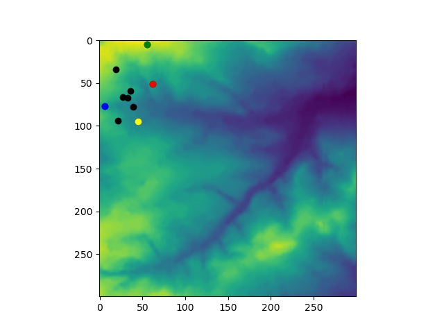
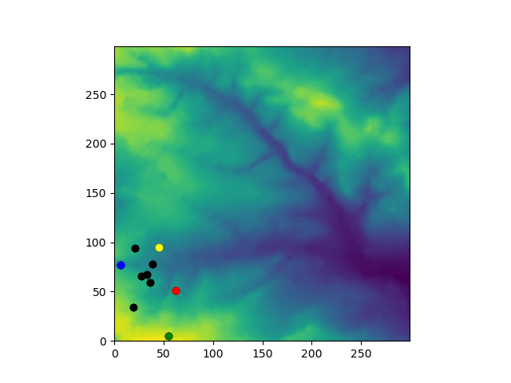

Agent Based Model Part 5
1. Introduction and Preparation
The next step in developing our Agent Based Model is to load some spatial data to represent a varied environment in which the agents interact. The model will be changed so that the agents interact with the environment in a simplistic way. Model output in the form of a file will be generated.
In your local code repository src directory create a new directory called "abm5". Open Spyder and use "save as" to save your "model.py" and "agentframework.py" files from abm4 into the abm5 directory. Create a new directory at the same level as your "src" directory called "data" and within this create new directories called "input" and "output". These directories will be used to store the model data separately to the program source code.
2. Input Data
Download/save into your newly created input data directory the text file: in.txt
Open the file in a text editor. Note that the file is made up of lines of Integer numbers separated with commas. Essentially, the file is a rectangular data file with 300 lines each with 300 values.
Create a new source code file named "io.py" in the abm5 directory, add the following lines:
import csv
# Read input data
f = open('../../data/input/in.txt', newline='')
data = []
for line in csv.reader(f, quoting=csv.QUOTE_NONNUMERIC):
row = []
for value in line:
row.append(value)
#print(value)
data.append(row)
f.close()
print(data)Run this new file. The output should correspond to the input data file only the values are presented with ".0" added.
Change the code block into a function called "read_data" that returns data. Write code to call this function from model.py by adding the following import statement:
import io
After the import statements try to call the read_data function using:
environment = io.read_data()
It is expected that you will encounter the following error:
Traceback (most recent call last): File "\src\abm5\model.py", line 19, inenvironment = io.read_data('../../data/input/in.txt') AttributeError: module 'io' has no attribute 'read_data'
This is confusing until you realise that there is a name collision because io is also a Python standard library and this is being imported instead. Create a directory called my_modules and move io.py and agentframework.py into it. Change the respective import statements in model.py to be:
from my_modules import agentframework
from my_modules import agentframeworkYour code is hopefully now correct and should run without error, but if you still get a confusing error and you are using Spyder, try restarting Spyder.
When reading the data add code to check that each row of data contains the same number of values and modify the read_data function to return the number of lines (rows) and number of values in each line (columns).
Let's regard each row as aligning with a y-coordinate and each column as aligning with an x-coordinate.
3. Plot environment
To plot the agents on the environment add the following at the start of the plotting section:
plt.imshow(environment)
A plot should be produced that looks like:

Notice that the plot y-axis has flipped. Limit the plot axes and flip the y-axis back by adding the following code before the plot.show() function is called:
plt.ylim(y_min, y_max) plt.xlim(x_min, x_max)
The output plot should now look like:

4. Agent-Environment Interaction
Let us imagine that the environment values represent resources that can be eaten/stored by agents.
Add environment as a parameter to the Agent class constructor. Set a class attribute in the same way as for the parameter/variable i, and add a store attribute setting this equal to zero. The __init__ method should be something like:
def __init__(self, i, environment):
"""
The constructor method.
Parameters
----------
i : Integer
To be unique to each instance.
environment : List
A reference to a shared environment
Returns
-------
None.
"""
self.i = i
self.environment = environment
self.x = random.randint(0, 99)
self.y = random.randint(0, 99)
self.store = 0In model.py when you instantiate Agent objects be sure to pass in i and environment in the correct order.
In the Agent class define the following function:
def eat(self):
if self.environment[self.y][self.x] > 10:
self.environment[self.y][self.x] -= 10
self.store += 10Think about what this code does and adapt it so that if the value of environment[self.y][self.x] <= 10 then the Agent instance stores what there is. If two or more agents are at the same location and there is less at the location for all the agents to have 10, then those that are processed first will be getting more. We will worry about this later.
In model.py call the new eat function after the move function and run the file. You should be able to see that the environment in the plot has changed around where the agents have been plotted, as in the following image.

The eating away should be more obvious if n_iterations is increased.
Commit your code to your local repository.
5. Coding Tasks
Define a function in model.py that adds up all the values in environment.
Define another function that adds up all the store values in all the agents.
Print out these sums and check that the total amount of resource and store in the system is not changing after each iteration of the model.
Define a function to write out the values of environment to a file at the end of the the iterations.
Try setting some of the model parameters towards the start of the program using keyboard input using something like:
n_agents = int(input("Set n_agents: Key in a positive integer then press :")) Commit your code to your local repository, and assuming you are using GitHub - push your changes to GitHub.